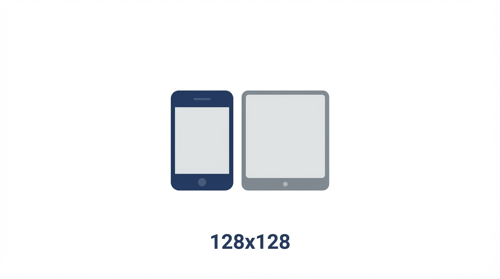
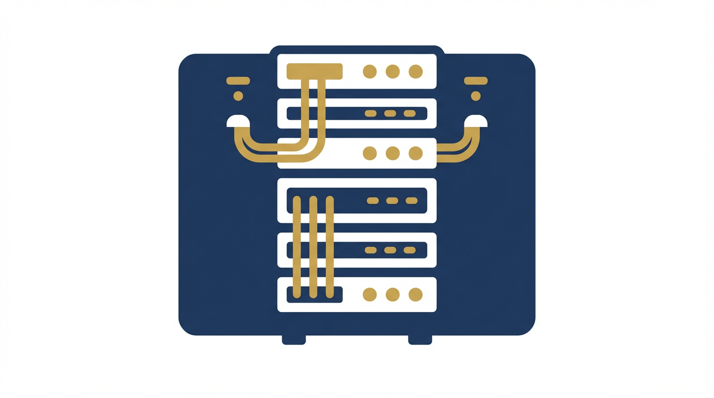
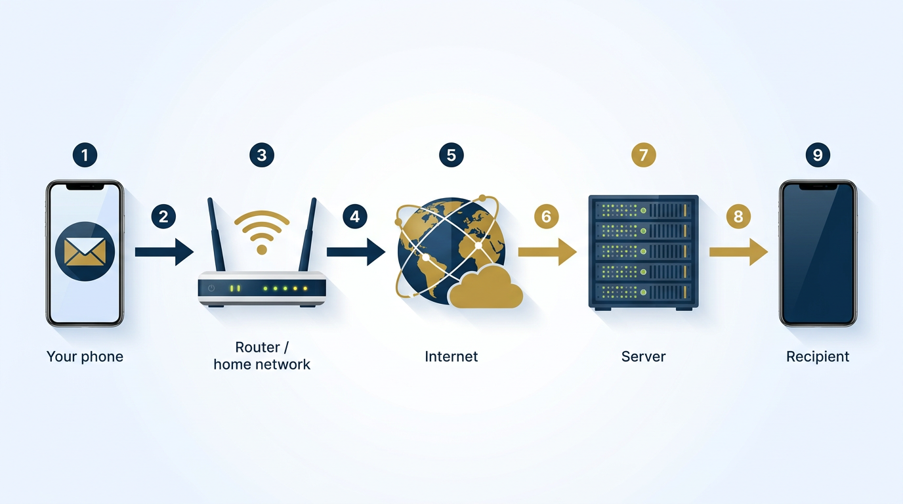

From fundamentals to confident, practical testing
Muchuo’s Centre For Training & Development
Instructor: Kevin K
Name: Kevin K
SNAP Account in Norwich. SNAP is an alternative payment method for Truck drivers.
Career: Senior Software Tester | QA Engineer | Software Developer | Instructor
Starting something new can feel difficult, especially without an IT background.
Software Testing is a skill you can learn step by step.
Everyone in tech started from zero.
The difference is consistency.
Commit to learning and practicing,
and you can build a career in Software Testing.
A computer is an electronic system that follows instructions to capture, change, keep, and share information. The same pattern appears in a phone, a laptop, or a data centre: data goes in, something useful comes out.
At a high level, every computer does four things:
Under the hood, modern hardware represents information using binary—patterns of 0 and 1. Text, images, audio, and program logic all become data the machine can store and process.
You will not write binary in your day job. What does matter for testing is the mental model: everything you exercise in an app—screens, APIs, files, and errors—is data moving through this pipeline. When you log a bug, you are often describing a place where data was wrong, late, or lost.
Keeping binary in mind helps you ask better questions: Where did this value come from? Where is it stored? What transformed it? What should the output be?
These are all computers in different shapes. They follow the same input → process → store → output idea; they differ by portability, power, and how people use them day to day.

Mobile Devices — phones, tablets, smart watches
Supercomputers — extremely powerful machines used for research and large data processingAll these devices run software — and software is what we test.
These are parts you can see and touch:
Together they form the physical machine—things you can plug in, swap, or upgrade.
These are programs that run on the device:
You use them through the screen and inputs; they are installed, updated, and run by the operating system.
Hardware provides the structure,
but software gives the device functionality.
Most day-to-day testing focuses on how software behaves—but hardware still shapes what is possible (speed, storage, screen size, network).
Presenter note: BRD is the bigger business view, while FRS breaks that vision into smaller, testable details for development and QA. You will see this flow more clearly when we map work from Epic to features, then tasks, then test cases.
Manages the computer and hardware
Examples: Windows, iOS, Linux
Used by end users to perform tasks
Examples: WhatsApp, Instagram, Excel
Used by developers to build applications
Examples: Java, C#, Python
As testers, we focus mainly on application software — what users interact with.
Presenter note: BRD is the bigger business view, while FRS breaks that vision into smaller, testable details for development and QA. You will see this flow more clearly when we map work from Epic to features, then tasks, then test cases.
Computers do not work alone — they are connected through networks to share data.
That is how websites load, messages arrive, and apps stay in sync: information moves between devices, routers, and servers instead of staying on one machine.
Your message does not travel in one jump to the other person’s phone. It follows a path through the network to a service that receives it and delivers it to the recipient.
Your phone → Internet → Server → Recipient
Each step must work — otherwise the message may fail or arrive late. That is why we learn how clients, servers, and networks fit together.
Every application you use depends on network communication to function.
For testing, remember that problems can show up in the app you see, in the connection between devices, or on the server — so we trace behaviour across those layers.
Presenter note: This becomes clearer in the API testing module, where we trace requests and responses between client and server to pinpoint exactly where failures happen.
Same path as before: your device leaves the home network, crosses the internet, reaches a server, then goes to the other person.

Software delivery
Building software from an idea to a finished product involves many roles (business, design, development, testing, operations) and a lot of coordinated work.
Teams move through phases so requirements are understood, the product is built and verified, and releases are controlled — all aimed at delivering something fit for purpose for real users.
A methodology is the agreed way a project is run: how work is planned, sequenced, reviewed, and delivered. It gives everyone a shared playbook from start to finish.
Presenter note: For this slide, frame methodology as a project-delivery model: Agile (usually through Scrum) is common, where work is planned in sprints and reviewed frequently; Kanban is another common model, where work flows continuously and is managed by WIP limits and board states.
Over time, several approaches have been defined to structure delivery. You will often hear names like these:
In this course we focus on the first three — Waterfall, V-Model, and Agile — because they are the most common in everyday software organisations.
Presenter note: Because this is a software testing course, anchor this list to testing practice — we concentrate on the first three (Waterfall, V-Model, Agile) since they most directly shape when testing starts, how test levels are planned, and how testers collaborate with the team.
When people talk about “the methodology” in a company, they mean the management and delivery practices everyone is expected to follow — meetings, documents, handovers, and how quality is checked.
Think of it like choosing a type of boat: each vessel behaves differently. A team that uses Waterfall plans and documents in a linear way; a team that uses Agile works in iterations with frequent delivery.
Your day-to-day work follows the organisation’s choice. If you join a Waterfall shop, expect staged gates and formal sign-offs. If you join an Agile shop, expect sprints, backlogs, and continuous collaboration — including with testers throughout.
The Waterfall model
Presenter note: Although this diagram shows a Waterfall sequence, almost every project still covers these same core stages — requirements, design, build, testing, release, and maintenance. What changes by methodology is the order, overlap, and how often teams loop through them.
Waterfall · Phase 1
This is the first stage of the lifecycle in a Waterfall-style project. The goal is to understand what must be built and why, before large-scale design and coding begin.
The Business Analyst (BA) and Subject Matter Expert (SME) work with stakeholders (sponsors, users, management) to capture needs. Early input is often high level — enough to scope the product, not every screen yet.
For example, a stakeholder might say:
“I need a website where customers can browse items that are in stock and pay online.”
Presenter note: Common requirement-gathering example: for an e-commerce project, stakeholders say “customers must search products, add to cart, pay securely, and receive order confirmation.” At this point, we capture goals, business rules, and success criteria — not full field-level behavior yet.
Waterfall · Requirement gathering
Stakeholder input is captured and shaped into a Business Requirement Document (BRD) — a high-level picture of goals, scope, and outcomes from the business point of view.
The BA then breaks the BRD into lower-level behaviour: what each feature must do, field by field and screen by screen. That detailed specification is often called the Functional Specification Document (FSD), also known as the Functional Requirement Document (FRD) or FRS (Functional Requirement Specification).
Same story, two altitudes: BRD = “what the business needs.” FRS = “how that need is expressed as product behaviour.”
Presenter note: Example of BRD to detailed specs: BRD says “users can pay online.” The detailed spec (FRS/FSD) then defines accepted cards, validation rules, OTP/3DS step, error messages, timeout behavior, and what appears in order history after payment success or failure.
Business Requirement Document
The BRD states what the business expects from the software: the problems to solve, the outcomes that matter, and the boundaries of the initiative.
If the BRD misses the real need or misstates priorities, the team can still build something — but it may not match what the business actually wanted. Testers see this as defects that are “correct per spec but wrong for the user.”
So the BRD is not paperwork for its own sake: it anchors scope and intent for everyone downstream, including QA when we validate against business expectations.
Presenter note: Think of enterprise expectations at multiple levels: Facebook expects feed/chat to load fast and stay available; Amazon expects accurate search, stock, checkout, and payment reliability; Google expects relevant results, strong performance, and trust/safety controls. The BRD captures these business expectations clearly so teams can later turn them into testable requirements.
Presenter note: Example (Facebook/Amazon login): BRD states users must sign in securely, recover forgotten passwords, and access their account quickly within defined security rules.
Functional Requirement Specification
The FRS takes a slice of the BRD — usually one feature or area — and describes it in detailed, testable terms: screens, fields, rules, and expected behaviour.
It tells developers exactly what to implement and how it should work under different conditions.
It is just as important for QA: we use the FRS to derive test scenarios and test cases, expected results, and data setups. When the spec is vague, tests (and the product) become vague too.
Presenter note: FRS means Functional Requirement Specification — for a login feature, it defines exact behavior like valid/invalid credentials, password rules, lockout limits, error messages, and what happens after successful sign-in.
Presenter note: Continuing the login example, this is where the FRS lists exact fields (email/password), validation rules, lockout logic, “forgot password” flow, and the precise success/error messages users should see.
The BRD sets business direction; the FRS turns that into concrete behaviour you can build and test against.
Strong requirements reduce wasted rework. As testers, we trace defects not only to “what the screen does” but to whether the right need was captured and specified clearly in the first place.
Presenter note: BRD is the bigger business view, while FRS breaks that vision into smaller, testable details for development and QA. You will see this flow more clearly when we map work from Epic to features, then tasks, then test cases.
Waterfall · Design
The design phase usually starts once requirements have been captured by the Business Analyst, subject matter experts, and product owner. It is typically led by a system designer and database designer.
They review the requirements and the existing systems so problems and constraints are understood. The goal is to interpret requirements so that software, hardware, and databases can be planned to work together in the organisation’s IT landscape.
Presenter note: In many companies, this stage starts with R&D (research and design), then gets played back with the Product Owner and Product Lead for alignment before build decisions are finalized. You will see this flow more clearly as we go further in the course.
System design
Presenter note: Building on Slide 30, once R&D direction is aligned with the Product Owner and Product Lead, these roles split the work: analysts refine needs, designers shape the solution, consultants validate fit, and UX/UI ensures usability before development starts. This may include a UI design of what the feature will look like once developed.
Waterfall · Development
Developers turn the design into working software. They follow the design specification from the system designer and work closely with the BA and architect so the build matches the agreed design and requirements.
When a feature is finished, developers often run unit tests (a form of white-box testing) to check the smallest pieces of code before handover to broader testing.
Teams choose languages and tools that fit the stack and standards of the organisation, for example:
Almost every business depends on data; developers and DBAs keep it consistent, secure, and available for the application.
Presenter note: This may differ from company to company (languages, tools, and platforms), but the core process and expected outcome are the same: build reliable features and manage data correctly.
Developers through the lifecycle (A–F)
Presenter note: Keep this image in mind — this is the flow you will repeatedly see and be part of throughout your life as a software tester.
After development starts, developers usually stay involved in several concrete ways:
Waterfall · Testing
This is where testers enter the lifecycle in force. The application is checked against the BRD and FSD / FRS — those documents are the main references for what “correct” means.
We exercise functionality to confirm behaviour is fit for purpose and matches the written requirements, not only that the code runs without crashing.
Presenter note: Even though this slide shows testers getting involved here, that is not true for every organization. Keep in mind that testing should begin as soon as any project document is available.
Testing reduces the chance that serious defects reach real users, where fixes are most expensive and reputational damage is real.
A well-known example: in 2015, Starbucks suffered a fault in point-of-sale systems that disrupted sales — estimated on the order of millions of dollars in lost revenue in a short window.
That kind of incident is why teams invest in rigorous testing before release — to find and fix issues while they are still cheap to correct.
Presenter note: Another strong example is Knight Capital (2012), where a faulty production deployment triggered unintended trades and caused about $440 million in losses in under an hour — a classic case of release/testing control failure.
In principle, testing can begin as soon as requirement documents exist — by reviewing them for clarity, gaps, and contradictions. Problems caught here are far cheaper than problems found after build.
That “shift left” mindset saves time and cost: fix the spec before developers code the wrong thing.
Waterfall · Release
Deployment is when the product is promoted for end users — typically moving approved packages from test or UAT into the live / production environment.
Systems may run on premises or in the cloud. Major providers such as AWS, Microsoft Azure, and Google Cloud let teams deploy without owning every physical server — usually as a paid service with shared responsibility for operations.
Presenter note: For this course, our cloud focus will be Microsoft Azure.
Waterfall · Steady state
After go-live, the product runs in production. Users may report defects, monitoring tools may flag issues, or the business may request changes to behaviour or screens.
Work is triaged, fixed, retested, and released in planned releases or patches — that ongoing cycle is normal operations and maintenance.
Presenter note: This becomes even more relevant when we go deeper into regression testing, where every fix or change must be checked to ensure existing behavior still works.
Change is expensive late on. If requirements shift during test or deployment, rework can cascade back through design and code — high cost and long delays.
Limited client involvement mid-flight. The model emphasises moving phases forward; end-users may have fewer checkpoints than in iterative methods, so misunderstandings can persist until late reviews.
Formal testing often starts late. In strict Waterfall, testers may wait until build is far along — so design or requirements issues are discovered after much work is already done.
That delay makes some improvements hard: feedback that would have been cheap in design becomes expensive in code. Critics of Waterfall often cite this “late test” effect — which is one reason Agile and shift-left practices gained traction.
Waterfall gives structure and clarity when requirements are stable — but it can struggle with late change and late feedback. Modern teams often blend discipline from Waterfall with earlier testing and iteration from Agile.
Presenter note: These challenges are some of the key reasons many companies no longer use pure Waterfall and instead adopt Agile or hybrid delivery models.
Software project methodologies · Agile
For a long time, Waterfall was the dominant way to run software projects. In February 2001, seventeen practitioners met to challenge that model and describe a different emphasis: working software, collaboration, and responding to change.
Their ideas were captured in the Agile Manifesto. Contributors included figures such as Kent Beck, Martin Fowler, Ron Jeffries, Ken Schwaber, and Jeff Sutherland — among others who shaped what we now call Agile.
Presenter note: Building from the previous slide, Agile became necessary because teams needed a faster way to handle change, get feedback earlier, and deliver working software continuously instead of waiting until late phases.
Agile · Mindset
Critics argued that strict Waterfall could overweight documentation and rigid phase gates, and underweight steady delivery of useful software and good management practice in the team.
Agile methods stress frequent, incremental delivery to users, feedback loops, and adapting the plan when learning replaces assumption. That shift is what many people mean when they say they moved from Waterfall to Agile.
Presenter note: In Agile, documentation is still important — but it is kept practical and lightweight to support fast feedback and steady delivery.
Agile · Ecosystem
Many organisations adopt a named workflow under the Agile umbrella, for example:
Presenter note: Now we will see that flow from Epic to feature, then into development and testing tasks.
Agile · Scrum · Roles
Agile is customer- and outcome-centric. Work starts from who uses the product, how, and why — whether that is an external customer, an internal role, or a persona.
The Product Owner represents stakeholders and defines what the product should be. They shape the vision, break work into epics and user stories, and maintain the ordered product backlog.
Stories are pulled into a sprint (often two to three weeks); the team then breaks them into tasks during sprint planning.
Presenter note: This shows the people chain end-to-end — from product and delivery teams in production to the users who finally consume the feature. It also reinforces the slide point that the Product Owner translates user needs into clear backlog items the team can build and test.
Agile · Scrum · Roles
The PO prioritises epics and stories so the team is not pulled in conflicting directions. They own the product backlog: ordering work and adding or refining stories (often with the team in backlog refinement).
They also shape releases — deciding which increments ship together — and stay close to stakeholders so expectations, risk, and value stay aligned as the product evolves.
Work breakdown — Epic → User story → Task
Presenter note: At Epic level, Product Owner and stakeholders define the business requirement; at story level, PO, BA, developers, and testers refine scope; at task level, developers and testers execute delivery. Testing starts as soon as the Epic requirement document is available.
Agile · Scrum · Roles
The Scrum Master helps the team practise Scrum: they protect focus, remove impediments, and coach sustainable pace and quality — without being the “boss” of who does what.
They facilitate daily stand-ups and sprint planning (helping avoid over-commitment), keep the board accurate in tools such as Jira or Trello, and run sprint retrospectives so the team improves each sprint.
They track blockers, work with others to clear them, and may hold one-to-ones so interpersonal or process issues surface early.
Presenter note: The Scrum Master keeps the team flow healthy by removing blockers, facilitating key Scrum events, and helping the team improve sprint by sprint.
Agile · Scrum · Roles
The development team delivers the increment: design, build, test, and integrate inside the sprint. The Scrum Guide defines the team by skills needed for the product, not by job titles alone.
In many IT settings you will still see developers, business analysts, QA engineers, designers, DevOps, and others — all collaborating within the same sprint goals.
Presenter note: This team builds the product from its first release and continues improving it by fixing bugs and adding new features over time.
Software project methodologies · Agile flow chart
Presenter note: Read this left to right — vision goes into the product backlog, selected stories move into the sprint backlog, the team runs sprint activities, and each sprint ends with a tested increment. Product backlog -> Sprint backlog -> Sprint cycle (Sprint planning -> Implementation/Design -> Development/Test -> Sprint review -> Sprint retrospective) -> Daily stand-ups -> Tested increment.
Agile · Flow
The product owner maintains the product backlog: epics and user stories from business and user perspectives. Stories can be added or refined over time — for example in backlog refinement.
The backlog is prioritised to match a roadmap (which themes land when). The PO may deliver one epic before another or defer work when dependencies require another increment first — priorities stay visible, not hidden in side conversations.
Presenter note: The product backlog is the master list of work, and the roadmap helps decide what gets done first and what can wait.
Agile · Flow
Each sprint, the team selects stories from the product backlog into the sprint backlog and estimates effort. Velocity reflects observed capacity — using past sprint data to plan realistically.
Sprint planning opens the sprint: the team commits to the sprint goal, agrees what “done” means, and negotiates a feasible scope with the PO — so testers know exactly what is in play for the cycle.
Presenter note: In sprint planning, the team chooses realistic work from the backlog based on priority and capacity.
Agile · Flow
Presenter note: Keep sprint planning simple: agree what to deliver, how to deliver it, and who owns each part.
Agile · Flow
Daily stand-ups (often 15 minutes): what you did, what is next, and blockers. Raising blockers early lets the Scrum Master coordinate fixes instead of losing days of progress.
Design happens inside the sprint: architects and designers shape UX, services, backend, and security for current stories — clearer design early helps testers define acceptance checks and automation scope.
Presenter note: Daily stand-ups expose blockers early, while in-sprint design keeps implementation and testing aligned.
Agile · Flow
Sprint review: the team demos the working increment to the PO and stakeholders — feedback feeds the next prioritisation.
Retrospective: the team reflects on what went well, what did not, and what to change. It is the right place to raise test debt, environment issues, or collaboration gaps.
Presenter note: Review checks product value with stakeholders; retrospective improves how the team works in the next sprint.
Agile · Flow
Examples only — durations vary by organisation and sprint length:
Presenter note: These ceremonies create rhythm, visibility, and quick feedback throughout the sprint.
Agile
Presenter note: Agile helps teams respond faster, learn earlier, and deliver usable value more often.
Agile
Presenter note: Agile works best with discipline, clear communication, and stable team ownership.
Agile (and Scrum in particular) organises work around short cycles, clear roles, and transparent backlogs. For testers, that means testing moves with the sprint: acceptance criteria, automation, and quality conversations are part of every increment — not only a final phase at the end.
Presenter note: Key takeaway — in Agile, testing is continuous inside every sprint, not delayed to the end.
Software project methodologies · V-model
The V-model is also known as the Verification and Validation model. Like Waterfall, it follows a strict sequence of phases — but it is cross-functional: each specification phase on the left is explicitly linked to a testing phase on the right.
Work flows down the left side through design and development; after coding at the bottom of the V, work flows up the right side through test levels. The shape makes the relationship between “what we build” and “how we prove it” visible.
Presenter note: Key thing to remember: in the V-model, while one side is being defined, the matching test side is prepared too — requirement analysis aligns with acceptance testing, system design with system testing, architecture design with integration testing, and module design with unit testing.
The V — specification (left) ↔ validation (right)
V-model · Paired phases
Requirements are gathered and baselined (BAs and SMEs). In parallel, the UAT side prepares acceptance test cases that will later prove the system meets business requirements.
System design describes interfaces, data, components, and business logic to match the specification. The system test team prepares end-to-end scenarios for the full system; those tests verify behaviour against design and requirements.
Presenter note: This level links requirement and design thinking directly to acceptance and system tests, so business expectations are validated clearly.
V-model · Paired phases
Architecture design shows how units communicate internally and externally (high level). Test analysts prepare integration cases so modules and interfaces work together as one system.
Module design is detailed design and structure per unit (developers). Developers prepare unit test cases to check each unit before broader test levels.
Presenter note: Here we confirm both structure and detail — modules must work alone first, then work together through integration.
V-model · Apex & first test level
Developers implement units from module design. This is the bottom of the V: specification becomes code; validation then moves up the right-hand side.
Developers run unit tests after implementation — often checking their own work first, then using the cases prepared in the module-design phase.
Presenter note: This is the turning point of the V — code is built at the bottom, then quality validation starts moving upward.
V-model · Executing tests
Test analysts verify modules work together per architecture design, including business logic and interfaces across units.
The system test team exercises the whole product against requirements and design — including functional, performance, security, and penetration testing where needed (more in the testing chapter).
Presenter note: At this stage, we verify interactions first, then confirm the full system works end-to-end under real test conditions.
V-model · Closure & benefits
UAT confirms the system meets business requirements, often with realistic or live-like data. It may revisit behaviours tested earlier before go-live.
Presenter note: UAT gives business confidence before release, and the V-model helps because tests were planned early for each matching phase.
V-model
Like strict Waterfall, the V-model is not very flexible. A change during implementation often forces rework through earlier phases — time-consuming and expensive.
Presenter note: The downside is rigidity — late requirement or design changes can cascade into costly updates across the whole model.
Course path
You have seen Waterfall, the V-model, and Agile / Scrum as context for how testing fits the lifecycle. From here on, the course focuses on Agile / Scrum — we do not continue with further methodology coverage beyond what you already have. The next part goes deeper into software testing: how levels and types fit together, how teams plan and run tests, and how areas such as functional, performance, security, and penetration testing (and UAT in practice) are handled in iterative delivery.
Presenter note: This is where we get into software testing properly — from here the course stays on Agile / Scrum; Waterfall and the V-model remain prior context only. We do not continue covering other methodologies in depth.
Methodologies set the rhythm and hand-offs for requirements, design, build, and test. The V-model makes the link between each specification step and its matching test level explicit. What follows is not another lifecycle diagram — it is the testing discipline in detail: techniques, coverage, environments, and how testers add value in Agile / Scrum.
Presenter note: Use this slide as a hard pivot — lifecycle and methodology are the frame; from here we zoom into what testers actually do day to day: coverage, techniques, environments, and value in Agile / Scrum. The V-model already previewed test levels; we do not parallel-track Waterfall or V-model from here. The next sections unpack testing practice, not another SDLC picture.
Software testing
Software testing is a phase in the development process of a software system, during which the Quality assurance engineer analyses the system to ensure that all the actual functionalities of the system meet the specified requirements.
In day-to-day work, that means comparing what the software does with what requirements, user stories, and designs say it should do — using planned test cases, checklists, and structured exploration where needed. The aim is evidence: clear steps, data, and results so the team can decide whether behaviour is acceptable or not.
It equally serves to identify bugs in the system, raise the bugs so that they can be fixed, and retest the bugs to ensure they no longer exist.
Raising defects usually means logging them in a tracking tool with enough detail to reproduce the issue — environment, steps, expected vs actual outcome, and impact on users or data. After development delivers a fix, QA retests the original scenario and often runs regression checks nearby so the fix does not introduce new problems.
In this course we treat testing as it runs in Agile / Scrum: continuously across sprints, tied to user stories and increments — not as separate Waterfall-style test stages. The purpose stays the same: reduce risk and give stakeholders confidence that the system behaves as agreed before it goes live.
Presenter note: Keep it simple: testing checks the product against agreed behaviour, turns problems into tracked defects, and closes the loop with retest and regression. Stay on Agile / Scrum — stories, sprints, and ongoing testing — for every example from here.
Software testing
The main objective of software testing is to ensure that the developed software meets the user requirements — behaviour, data, and quality that stakeholders agreed to.
In practice, requirements touch more than one place in the system. There are three layers that are directly or indirectly relevant to testing; we will unpack each in turn:
Presenter note: Bottom line: the job is to show the product matches agreed requirements; this slide maps that work to three places — UI, servers, and data. In Agile / Scrum, tie examples to stories and sprint increments (what ships to users each iteration). The next slides unpack each layer.
Software testing
Three layers — request flow
Software testing
Every layer matters for QA: the UI is where most functional checks happen; servers host logic and sessions (including performance testing); databases hold the source of truth for SQL-based verification and reconciliation.
This course covers theory and practical where noted — deep server performance labs may be optional, but you will still recognise how defects surface at each tier and how to align tests with requirements across the stack.
Presenter note: Keep it to three plain ideas: UI — what the user sees and clicks; server — the logic in the middle; database — where the data is stored. A defect can show up at any layer; good testers learn to notice which layer a symptom points to.
Software testing · Layers
The user interface is just the screen — what you see, tap, and type into.
Testers check that the screen does what the user story or design says. That is functional testing here.
Presenter note: Only one thing to remember: UI = the screen. Ask: does it match the story? Done.
Software testing · Layers
Your phone or laptop asks for a page. A server is another computer that answers and sends the page or data back. Your device is the client.
Try it: open any website. Your device asked; a server sent what you see. They use the internet to talk. Performance testing often looks at this middle part (this course explains the ideas; labs may be optional).
Presenter note: Say: you ask, a far-away computer answers. That computer is the server. Open a website — that’s the whole picture.
Software testing · Layers
One app can use more than one computer behind the scenes. The work is split up.
Presenter note: Three simple buckets: app, data, helpers. Many people use the same app; different computers do different jobs. Students don’t need every tech name — only why the work is split.
Software testing · Layers
A database is an organised collection of structured data, usually stored electronically and scoped to an application or domain — for example customer profiles, catalogue items, orders, and returns for an online shop.
Data is arranged in tables. Each table has rows (records) and columns (fields). The intersection of a row and column is a cell — one value. A Database Management System (DBMS) controls access, security, and consistency; testers use it (and SQL) to verify that what users see matches what is stored.
Software testing · Layers
SQL is the standard language for relational databases. It is used to insert data, query and retrieve rows, update or delete data — the core of data manipulation for testers and developers alike.
In testing, SQL helps you prove state: counts, joins, and spot-checks against the UI. The course includes SQL theory and practical sessions so you can validate data with confidence alongside functional checks on the UI.
Software Testing Life Cycle (STLC)
As with the stages an application goes through from start to completion in development, testers follow a structured set of phases — the activities you perform at each point in the project.
These testing phases are designed to work alongside the software methodologies you have already seen (Waterfall, V-Model, Agile, and others): the same STLC ideas apply; only timing, ownership, and ceremony change with the methodology.
Software Testing Life Cycle — typical phase order
STLC · Phase 1
This is the first step in the testing process. The tester studies requirement documents to understand what the project is about — at the start of each sprint (Agile) or at project kick-off (Waterfall).
You review business and functional requirements and any related documents. You may set up review meetings with business analysts, tech leads, architects, and other stakeholders to clarify testable requirements.
STLC · Phase 2
The second phase is where testing is planned end-to-end. In Waterfall, a test manager often owns the master test plan.
In Agile, a single tester in the team may still produce a plan (or lightweight equivalent) so the whole Scrum team shares scope, risks, and how testing will run in the iteration.
Test plan
The introduction explains what the document is for and what it contains, so readers quickly see what the plan will cover.
Like other formal documents, the test plan should include a table of contents so people can jump to the section they need (scope, approach, criteria, schedule, risks, and so on).
Test plan · People & governance
RACI clarifies rules and responsibilities: Responsible (does the work), Accountable (owns the outcome), Consulted (input), Informed (kept up to date).
Examples: in Agile, a Scrum Master might be responsible for facilitation; in Waterfall/V-Model a test manager may be accountable for test delivery. The author of the plan is responsible for its content; the product owner or project manager stays informed; business analysts are often consulted on requirements.
Test plan
In-scope items are the functionalities and areas that will be tested for this project or release, aligned with requirements and priorities.
Out-of-scope items are either not valid for this effort, or are valid but explicitly deferred — not tested in this cycle. Saying both avoids confusion and wasted effort.
Test plan
This section describes how you will test: which methods and levels apply (e.g. unit, system, UAT, regression), how often key flows are exercised, and how defects are logged and tracked.
Stakeholders should see which types of testing are in play and how quality will be demonstrated — not only “that we will test,” but what testing means in practice for this release.
Test plan
Entry criteria state what must be true before testing starts — for example: test cases prepared, environment and data ready, requirements signed off, and build available in the test environment.
Exit criteria state what must be true to say testing is complete for the agreed scope — e.g. planned cases executed, critical defects fixed and retested, and closure rules met.
Test plan
Sometimes testing must stop: for example a blocker or show-stopper defect that must be fixed before progress is meaningful, or when too many defects remain open (e.g. a high share still unresolved).
During suspension, the team may focus on retesting fixes until an agreed threshold is met; then execution can resume against the full scope.
Test plan
Deliverables are the artefacts testers produce across the cycle, with agreed timing. Typical examples: test records (scenarios and cases), defect reports, and a test summary at the end of a cycle or release.
Naming them in the plan sets expectations for who receives what and when — which supports audits, handovers, and release decisions.
Test plan
Testing tasks list what testers will do: design cases, maintain the plan, manage defects, retest, regression, closure reporting, and related activities.
Resource planning covers system needs (environments, tools, data, hardware/software) and people (how many testers, skills, training). If something does not apply, the plan can say so explicitly.
Test plan
The schedule is often a separate document (Excel, Word, PowerPoint, or a planning tool) that the test plan references.
It tracks activities, owners, start and end dates, and progress — aligned with the test plan and, in practice, with the six STLC phases so everyone sees what happens when.
Test plan
List risks that could affect testing before, during, or after execution — and for each, a practical mitigation or fallback. Naming a risk without a response helps little when pressure hits.
STLC · Phase 3 · Test record
Testers apply appropriate testing techniques to build the test record: scenarios, cases, and expected results. During execution you record actual results and mark each run Pass or Fail.
A solid case usually states a precondition, the expected outcome, and leaves space for the actual outcome. The three pillars to keep in view are test scenarios, test cases, and test scripts — each is covered next.
STLC · Test case development
In this stage you assemble test scenarios, test cases, and test scripts using the techniques covered later in the course. This is where you act as a test analyst: think through what could happen to the application and capture it in writing.
That thinking often surfaces questions that can refine or clarify requirements. A test record template is provided in the course materials so your work stays consistent and reviewable.
Test case development
A test scenario is sometimes called a test condition or test possibility. From the requirements, you describe what a screen or feature should do from the end user’s perspective, using questions such as: “What do you expect when you use this screen?” or “What should this functionality deliver?”
Example: Verify that a user can select items on the items screen and save them to the basket.
From scenarios like this you derive test cases with more detail.
Test case development
Test cases are usually derived from scenarios and are backed by requirements. Each case targets specific elements or behaviours: check availability, set input data where needed, and define expected results.
Examples: (i) The screen lists multiple item brands when the user searches. (ii) The user can select a single row in the list. (iii) The user can increase the quantity. One scenario can map to many test cases.
Test case development
Test scripts are the steps to perform before you can observe the result of a test case. Each case has its own script so readers can follow exactly what was done.
Example: Goal — the search screen shows multiple items when searched. Steps: Log in with valid username and password and submit. Go to the search box and enter “Baked beans”. Click Search. Then compare the outcome to the expected result for that case.
Test case development
Every test case needs an expected result. That is what you compare against the actual outcome to decide Pass or Fail.
Example: Case — the screen shows multiple items when searched. Expected result: After Search is clicked, the screen lists different brands of baked beans (or the agreed catalogue behaviour).
Test case development
Link each test back to its requirement — and back again
A traceability matrix ties each test case to its parent requirement (and the other way around). From a case reference you can find the requirement it came from; scenarios inherit numbering from the parent requirement (e.g. requirement AB2 → scenarios AB2.1, AB2.2, AB2.3).
Each scenario spawns cases such as AB2.1.1, AB2.1.2, … and AB2.2.1, AB2.2.2, … so coverage and gaps stay visible.
STLC · Phase 4
Your test environment is usually the server or stack where you run tests — often reached via a URL (the organisation’s test site link). Many teams use separate tiers: Development, Test, UAT, and Production (live).
For a desktop application you may get a dedicated install or instance instead of a web URL. Know which environment you are on before you log results or raise defects.
STLC · Test environment
Development → Test → UAT → Live
Developers work in Development; a build is copied or deployed to Test for QA. After testing passes agreed gates, it moves to UAT for business validation. When UAT is complete, the same promotion pattern releases to Live where real customers use the system.
STLC · Test environment
Four checks before you rely on the environment
The URL is only the start: confirm the SQL server and database backing your tests, that test data is loaded where you expect, and any hardware (devices, payment terminals, etc.) is available.
STLC · Phase 5
One case at a time: compare expected vs actual
Execute the cases you prepared: compare actual to expected for each step. If they match, capture a screenshot and mark Pass. If they do not, mark Fail, log a bug in your tracking tool (e.g. Jira), and assign it to the developer.
STLC · Test execution
From discovery to closure (same idea in most tools)
Defect workflow is usually managed in a bug tracking tool. The next slides add detail: what goes into a ticket, how triage works, and what happens when retest fails or a bug is found in UAT.
Bug tracking
The bug is raised in the tracking tool with a clear title, description, replication steps (test script), assignee, screenshot, environment, and reference number. Tester and developer assess whether it is a valid bug (some organisations assign directly to development).
Bug tracking
After assessment — invalid vs valid path
After assessment the bug may be rejected as invalid and closed. If it is accepted, it is assigned to a developer; once fixed, it comes back to you for retest.
Bug tracking
Failed retest cycles back; UAT uses the same process
If retest fails, the work returns to the developer until the fix passes. A bug found in UAT follows the same management process: notify QA, create the ticket in the tool, and track it through to closure.
STLC · Phase 6
Final checks before you sign off testing
In the last phase of STLC, confirm that all test cases for the agreed scope have been run. Check that open bugs are either fixed and closed or formally accepted as deferred by the test manager, project manager, or Scrum Master.
STLC · Test closure
Confirm end-to-end coverage against requirements where that was in scope. Publish test closure (or summary) reports to stakeholders. Finally, verify that entry and exit criteria from the test plan have been satisfied for this release or sprint.
Software testing
Four families · many specific methods
The deck groups methods under reviews, non-functional testing, white-box, and black-box work. The next slides go deeper on black-box ideas (and how they differ from white-box), then each technique in turn.
Structure vs behaviour
See the code — exercise paths, branches, and what developers ship
White-box (or clear-box) testing targets internal design and code. The most common form is unit testing, usually done by developers. Because the “box” is transparent, the people testing can read the implementation they are checking.
Structure vs behaviour
Requirements in, behaviour out — the implementation stays hidden
Black-box testing checks what the built system does from the outside. Testers compare behaviour to requirements and do not need to know implementation details — the box stays opaque.
Black-box techniques
Also called positive testing — expected behaviour from the spec
You design scenarios and cases straight from the requirement text. This is positive testing when you assert that the system does what the spec says under normal, valid conditions.
Black-box techniques
Opposite of pure positive — prove bad inputs do not break the system
Negative tests try invalid data and edge misuse: typos, wrong case, bad combinations. You expect a controlled response (message, lockout, validation) — not data corruption or silent failure.
Black-box techniques
Inputs move the system from state to state — test both valid and invalid moves
Use this when behaviour depends on where you are in a workflow. You define states and transitions, then write tests for each allowed move and for important forbidden moves.
Black-box · Example
The requirement describes a full ATM journey. Your cases walk each transition: card, PIN correct/incorrect, balance, withdrawal, card returned, session ended — including negative paths.
Black-box techniques
Defects often cluster at edges — test min, max, just inside, just outside
Pick boundaries from the requirement: start/end, min/max, just inside and just outside. Many failures appear at “off by one” or limit checks.
Black-box · Example
Example rule: only 18–100 years may register. You test just below 18, on 18, typical ages, on 100, and above 100 — as in your written cases.
Black-box techniques
Split data into classes — one strong case per class often suffices
Divide inputs into partitions where behaviour is expected to be equivalent. Pick at least one representative from each partition — combine with BVA on borders between partitions.
Black-box · Example
Three-way split: too young, allowed band, too old — with one sample case per class. The specification is the source of truth if slides disagree.
Black-box techniques
Use what you already know to think of what might go wrong
Error guessing means: use your memory of real bugs and common weak spots when the document does not say what to run. It is an extra on top of proper techniques — not a substitute.
Black-box techniques
Mix written tests with time to explore freely
You do not follow a full script for every click — that is the “explore” part. It helps for a final pass or when time is tight. Always pair it with planned tests so everyone can see what was covered.
Black-box techniques
Draw what must be true before something can happen
You sketch causes and the result they lead to. When several rules must all apply, you join them with and. When one path is enough, you mark or. That picture often becomes a decision table — a neat grid of cases — as the next step.
Black-box · Decision logic
One input (age) · several conditions · different screens
The deck lists conditions (age under 18, valid band, over 70, exact boundaries) and the screen or message each should trigger. That is how you turn a graph or table into concrete test cases.
Black-box execution
Re-run the failed case to prove the defect is gone
Retesting means executing again the same test that failed, after a fix, to confirm the bug no longer appears. It is targeted at the defect you reported — not a full sweep of the product.
Black-box · Build quality
Quick sanity check before you invest in deep testing
A quick check that the build is testable before you invest in long runs. Also called build verification. If smoke fails, fix the build first — avoid burning time on a broken foundation.
Reviews
Review the spec or design together — one screen, one story
A walkthrough is a scheduled session: the team goes through requirements or design in one room (or one call). Everyone sees the same words, can ask questions, and spots what will need testing later — before work is finished.
Reviews
Another tester checks your artefacts before you run
A colleague reviews your test plan, cases, or completed record. The aim is end-to-end coverage of testable requirements and consistent expected results / screenshots.
Reviews
Check the technical design before developers build — together
Technical reviewers make sure the document follows standards and matches the agreed architecture before build. That cuts rework when things like interfaces and non-functional needs (speed, security, …) are expensive to fix at the end.
Reviews
Short, friendly checks while the document is still a draft
Informal reviews happen often while a document is still growing — usually two people, little ceremony, but still aimed at quality before the work is treated as “final”.
Non-functional
Features tell you what to build; non-functional tells you how well it must run
Non-functional testing checks how the system behaves in real life: speed under load, safety, ease of use, staying up, and bouncing back after failure. It usually needs the right tools and test environment.
Non-functional
Abuse and breach — versus consistency and trust over time
Security asks whether data and access are protected. Reliability asks whether the system behaves consistently and recovers well — overlapping ideas, but different test design and tooling.
Non-functional
Bounce back after failure — versus stay available for users
Recovery proves you can get back after failure. Availability measures how often the service is actually there for users — often expressed as uptime or SLA targets.
Non-functional
Comfortable for people — versus keeping pace when load grows
Usability is about people completing tasks comfortably. Scalability is about the system keeping pace when demand or data size increases — load tests and capacity planning.
Non-functional · Performance
One measures waiting; the other measures how much the system can carry
Response time is the wait for one request or step. Throughput is how many of those steps (or how much data) the system can finish per second when it is busy. Teams usually track both.
Non-functional · Contrast
One user checks health — many users prove capacity
A performance smoke is a quick “does it respond?” check. A load test deliberately increases concurrent work to see if latency and error rates stay within targets.
Non-functional · Performance
Push past the limit — or survive a sudden burst
Stress tests how the system behaves when you keep increasing load past the expected ceiling. Spike tests a short, sharp surge — typical for flash sales or traffic bursts.
Non-functional · Performance
Keep the same load running — problems that only show up after hours
A soak (endurance) test keeps a steady load for a long time. That can reveal leaks, slow drift, and running out of resources — things a quick load test often misses.
After go-live
After go-live changes, re-verify what still matters
After release, changes to environment, integrations, data, or emergency fixes can break behaviour that used to work. Maintenance testing reduces that risk in controlled ways.
Execution vocabulary
Prove the bug is gone — then prove nothing else broke
Retesting means running the same case again to show the original failure is gone. Regression means running more tests to show the change did not introduce new problems in existing behaviour.
Let us put everything to practice
Use this section to add the points you want to mention for each slide.
Open this file in your browser (double-click). If images do not load, open the copy next to your image files:
.cursor\projects\c-Users-muchu-Software-Testing-Notes-PP\assets\complete-software-testing-course-preview.html
On phones and tablets, use pinch-to-zoom (or browser zoom) to make slides larger or see the full width—same layout as on desktop, scaled by the device.